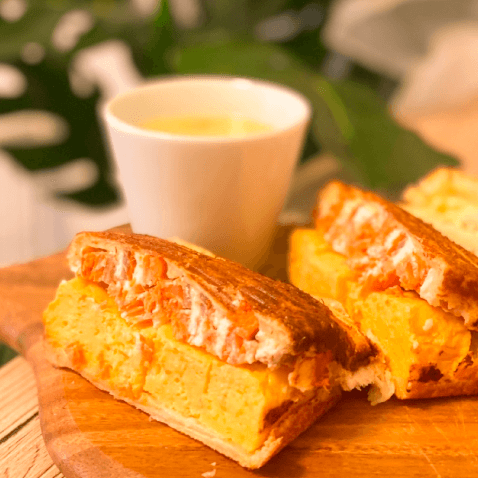

くるみのベーカリー Bakery of Walnut
私の作るくるみパンは健康を第一に考え、全粒粉をメインにしたおいしいパンです。余計な添加物を全て取 り除き、卵やお砂糖も不使用な為、お子様にも安心して食べて頂けます。
くるみには、食べ過ぎ防止となる不溶性食物繊維や、筋肉強化となるアルギニン、抗酸化作用をもつ栄養素が豊富に含まれているため、アンチエイジングや美容にもいいとされています。さらには幸せホルモンのトリプトファンまで含まれているため、心まで潤います。そんな協力なパワーを持つくるみを混ぜ込むことによって、これ以上ないおいしくて健康なパンがこのくるみパンです。
パンへのこだわり


- 
焼きたてのパンの香りってすごく幸せになりませんか？私はそんなほんの小さな気持ちからパンの魅力に気づきました。しかし、小麦粉ってどうしても太るイメージがありますよね。身体にも良くないイメージが、頭の中のどこかにありませんか？食べたいのに食べれないという経験を、きっと、少なからずの人達がしているはずだと思います。私は、そういう概念を完全に覆したパンを焼くことができます。
全粒粉、ライ麦粉にこだわり、その二種類をベースとしているのですが、
全粒粉とライ麦粉には、食物繊維やビタミン、ポリフェノールやミネラルが豊富に含まれており、パンには不足しがちな栄養素を全て補ってくれます。小麦粉と違い、GI値も上がりにくいため、ダイエットにも向いていると言えます。
私自身、このパンを食べながら、約2ヶ月の糖質制限で体脂肪を10％落とした実績があります。毎日ではないですが、どうしても我慢できなくなったときは、このパンを頂いていました。
そんなおいしくて身体に良いパンが日常にあると、凄く幸せだと思います。
私はおいしくて身体に良いパンを日々研究しています。そんな幸せに愛されるパンをたくさんの人に知ってもらい、たくさんの人の手元に届けばいいなと思っています。みなさんの心がこのパンで潤いますように。
パン教室
少人数制でのレッスンです。 実技でしか学べない生地の感じや、発酵のタイミングなど、一緒に幸せに愛されるパンを焼きましょう。オンライン教室も開催予定(開催中)です。

ベーカリーショップ
準備中

1991年4月22日生まれ、大阪出身。趣味は料理、御朱印集め、読書など。パンに目覚めたきっかけは、焼きたてのパンのあの無条件に幸せになれる香りが大好きでおうちで焼き始めたのがきっかけです。
お問い合わせはこちらから